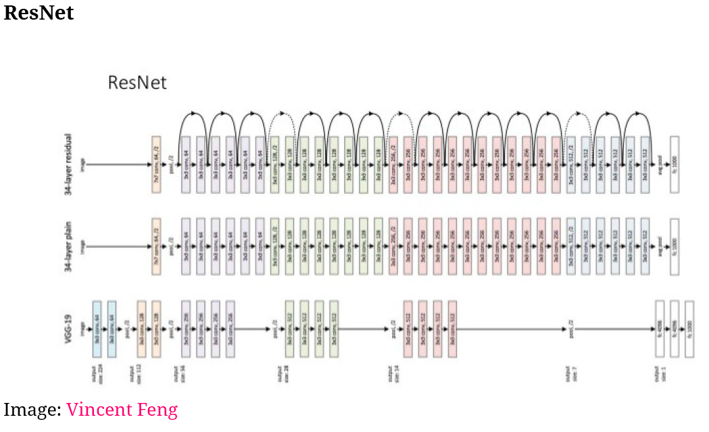

9 Advanced Deep-Learning Best Practices
9.1 Going beyond the sequential model: the Keras functino API
So far we have only applied the keras_model_sequential to build the network.
In this section we cover how we can handle different inputs at the same time. They argue that just making several models and then just balancing out the results is too naive and it handles redundant information. Hence we see how different types of information can be injected into the same network.
We are for instance going to use the functional API.
9.1.1 Introduction to the functional API
Basically we can set our own input and output layers and then assemble them in our own model.
Here is a small example.
library(keras)
#The traditional approach
seq_model <- keras_model_sequential() %>% #Sequential model that we have used before
layer_dense(units = 32, activation = "relu", input_shape = c(64)) %>%
layer_dense(units = 32, activation = "relu") %>%
layer_dense(units = 10, activation = "softmax")
#The manual API approach
input_tensor <- layer_input(shape = c(64))
output_tensor <- input_tensor %>%
layer_dense(units = 32, activation = "relu") %>%
layer_dense(units = 32, activation = "relu") %>%
layer_dense(units = 10, activation = "softmax")
model <- keras_model(input_tensor, output_tensor) #This turns an input and output tensor into a model
summary(model)This is basically another approach to construct the model. Hence a manual way to construct what we did with keras_model_sequantial.
But why do it?
- Here we are able to specify several inputs and outputs, hence also cmobining different types, e.g., images and texts.
An example:
- We see that there are key words, e.g., carpenter offer = a cheap house that should be renovated.
- If there are pictures of a view, e.g., a like etc.
- Hence one may not only use facts and metadata, but use the descriptions and images for the houses to capture that imformation in the model.
Then how to go about it?
- e.g., if we have boston housing data, we see that the metadata, sales description and images may be explaining some of the same things, hence if you build three different models you will include a lot of redundancy in the model. Also interactions between the data types will be ignored if you have three different models. This can be overcome by having all data types included in the same area. Such a model could look like this:
Hence we see that the data types and different approaches are put into the same model and then we use back propagonation to tune the parameters.
It works. But there is an example in the book where they just write
unrelated_input <- layer_input(shape = c(64))
bad_model <- keras_model(unrelated_input, output_tensor)I don’t see what is different.
Now we can compile it
model %>% compile(
optimizer = "rmsprop",
loss = "categorical_crossentropy"
)
x_train <- array(runif(1000 * 64), dim = c(1000, 64)) #Just random data
y_train <- array(runif(1000 * 10), dim = c(1000, 10))
model %>% fit(x_train, y_train, epochs = 10, batch_size = 128) #Train tha model
model %>% evaluate(x_train, y_train) #Evaluate the model9.1.2 Multi-input models
Now imagine that we want to run several inputs, for instance wit text sequences, then we can actually run the text sequences and then on a later point concatenate them before our densely connected layers. Such a network would look like this:
Figure 9.1: A model with several inputs
Hence we see that we have two separate branches that are being joined before the densely connected layers. Let us now look at how such a model is built and run.
#Listing 7.1. Functional API implementation of a two-input question-answering model
library(keras)
text_vocabulary_size <- 10000 #Amount of words
ques_vocabulary_size <- 10000 #Amount of words
answer_vocabulary_size <- 500 #The amount of words in our answer
#The first input layer
text_input <- layer_input(shape = list(NULL), #Text input is a variable-length
dtype = "int32",
name = "text")
encoded_text <- text_input %>%
layer_embedding(input_dim = text_vocabulary_size + 1,
output_dim = 32) %>%
layer_lstm(units = 32)
#The second input layer
question_input <- layer_input(shape = list(NULL),
dtype = "int32", name = "question")
encoded_question <- question_input %>%
layer_embedding(input_dim = 32, output_dim = ques_vocabulary_size) %>%
layer_lstm(units = 16)
#Now we want to concat the layers
concatenated <- layer_concatenate(list(encoded_text, encoded_question))
#We add a densely connected layer ontop with softmax activation
answer <- concatenated %>%
layer_dense(units = answer_vocabulary_size,
activation = "softmax")
#Assembling the model
model <- keras_model(list(text_input, question_input), answer)
#Compiling
model %>% compile(
optimizer = "rmsprop",
loss = "categorical_crossentropy",
metrics = c("acc")
)Notice that our answer vocabulary does only contain 500 words. They do not comment on it
num_samples <- 1000
max_length <- 100
#Create dummy data
random_matrix <- function(range, nrow, ncol) {
matrix(sample(range, size = nrow * ncol, replace = TRUE),
nrow = nrow, ncol = ncol)
}
text <- random_matrix(1:text_vocabulary_size, num_samples, max_length)
question <- random_matrix(1:ques_vocabulary_size, num_samples, max_length)
#One hot encoding answers
answers <- random_matrix(0:1, num_samples, answer_vocabulary_size)
#Fitting using a list of inputs
model %>% fit(
list(text, question), answers,
epochs = 10, batch_size = 128
)
#Fitting using a named list, this is basically the same
model %>% fit(
list(text = text, question = question),
answers,
epochs = 10, batch_size = 128
)For some reason this is not working
9.1.3 Multi-output
Instead of having multiple inputs we can also have multiple outputs. That would look like this:
Figure 9.2: A model with several outputs
Often this is applied for companies to predict unknown variables, e.g., age, gender and so on, thus the information that you dont give, so they can make the recommendations better.
So we aim for a model that is able to predict several outputs, for instance we have some SoMe data and we want to predict the age, income and gender of the person that we are getting information on.
#Listing 7.3. Functional API implementation of a three-output model
library(keras)
vocabulary_size <- 50000
num_income_groups <- 10
posts_input <- layer_input(shape = list(NULL),
dtype = "int32", name = "posts")
embedded_posts <- posts_input %>%
layer_embedding(input_dim = 256, output_dim = vocabulary_size)
base_model <- embedded_posts %>%
layer_conv_1d(filters = 128, kernel_size = 5, activation = "relu") %>%
layer_max_pooling_1d(pool_size = 5) %>%
layer_conv_1d(filters = 256, kernel_size = 5, activation = "relu") %>%
layer_conv_1d(filters = 256, kernel_size = 5, activation = "relu") %>%
layer_max_pooling_1d(pool_size = 5) %>%
layer_conv_1d(filters = 256, kernel_size = 5, activation = "relu") %>%
layer_conv_1d(filters = 256, kernel_size = 5, activation = "relu") %>%
layer_global_max_pooling_1d() %>%
layer_dense(units = 128, activation = "relu")
#Creating and naming the output layers
age_prediction <- base_model %>%
layer_dense(units = 1
,name = "age") #Notice that w ename it appropriately
#Notice that activation is just be default linear, continous output
income_prediction <- base_model %>%
layer_dense(units = num_income_groups #One for each income group
, activation = "softmax" #We want distributed probabilities
, name = "income")
gender_prediction <- base_model %>%
layer_dense(units = 1 #Binary output
, activation = "sigmoid" #We want probabilities for male vs. female
, name = "gender")
#Creating the model
model <- keras_model(
posts_input, #The input
list(age_prediction, income_prediction, gender_prediction) #The output layers
)
summary(model)Now we see that we have built a model with almost 46.000.000 parameters and have several outputs.
Notice that we have three different output types, namely continous, categorical and binary. Hence we also want to apply three different loss functions and also three different accuracy measurements.
#Listing 7.4. Compilation options of a multi-output model: multiple losses
#Notice that we named the output layes, hence we can call these
model %>% compile(
optimizer = "rmsprop",
loss = list(
age = "mse",
income = "categorical_crossentropy",
gender = "binary_crossentropy"
),
#Balancing out the loss functions
loss_weights = list(
age = 0.25,
income = 1,
gender = 10
)
)An alternative could be to specify loss = c("mse", "categorical_crossentropy", "binary_crossentropy") although that is not as easy to read.
We see that the different loss functions penalize differently, and in addition, we are also working on different scales. For instance we see that gender can only be two outcomes, hence you can only that far off, where the age for instance, you can be 75 but e.g., predicted to be 10 years old, and working with squared errors one will be able to be very far off, as it penalize such.
We are going to solve this with adding wheigts to the loss functions, see the code above.
Notice that we also call the outputs different heads of the network.
Now we could train the model.
Notice that we cannot train the model, as we dont have the input and the target values, but if we had, we could assign them in its respective list element.
model %>% fit(
posts, #The input
list( #The output
age = age_targets, #Notice that we use a named list
income = income_targets,
gender = gender_targets
),
epochs = 10, batch_size = 64
)Notice that we could also have encoded list(age_targets, income_targets, gender_targets), hence without using the naming.
9.1.4 Directed acyclic graphs of layers (DAG)
Now we have looked at multiple inputs and multiple outputs. We see that the hidden layers can also have a more complicated constellation. We are going to look at:
- Inception modules
- Residual connections
9.1.4.1 Inception modules
Here they apply different convolutions and then concatenates it before pushing the information into the densely connected layers. It could look like the following:
Figure 9.3: A model with several inputs
Their premise is that instead of going deep they go wide. As traditional CNN can be very deep, very cumbersome and also prone to overfitting.
In R it could look like this:
Things to notice:
- All output sizes must be the same
library(keras)
branch_a <- input %>%
layer_conv_2d(filters = 128, kernel_size = 1,
activation = "relu", strides = 2)
branch_b <- input %>%
layer_conv_2d(filters = 128, kernel_size = 1,
activation = "relu") %>%
layer_conv_2d(filters = 128, kernel_size = 3,
activation = "relu", strides = 2)
branch_c <- input %>%
layer_average_pooling_2d(pool_size = 3, strides = 2) %>%
layer_conv_2d(filters = 128, kernel_size = 3,
activation = "relu")
branch_d <- input %>%
layer_conv_2d(filters = 128, kernel_size = 1,
activation = "relu") %>%
layer_conv_2d(filters = 128, kernel_size = 3,
activation = "relu") %>%
layer_conv_2d(filters = 128, kernel_size = 3,
activation = "relu", strides = 2)
#Conatenate the layres
output <- layer_concatenate(list(
branch_a, branch_b, branch_c, branch_d
))Notice that we can load a fully trained model somewaht similar to the model above. Just as we loaded VGG16, we can load application_inception_v3 into the environment. Notice that this is trained on the ImageNet. Another pretrablined model is Xception (Extreme Inception).
9.1.4.2 Residual Connection
Basically this is a shortcut function between the layers. Meaning that output for one layer can not only be input for the next layer, but it can also be input for deeper layers.
In general, this deals with two problems:
- Vanishing Gradients: where previous seen information is ruled out, and
- Representational Bottlenecks: Recall that in a traditional network each layer is only processing what it is given from the previous layer. Meaning that if previous neurons do not activate, then they will not push on that piece of information to the next layer. hence we can potentially loose key information in an early layer, for instance if we do not have enough units to handle the information. With residual connections
Since a given layer can have more than one input, and thus also activations, then we generally assume that the input sizes are the same. Although if they are not one must reshape the input.
Notice that this approach can be found in the pretrained network Xception
There is an example of how the residual connection could be built. It does not appear to be able to run, hence it will not be included in this notebook.
It can look like the following:

One see three different models, where the one a top is the ResNet, where we see that there are a lot of layers and to avoid the vanishing gradient problem is solved with having the residuals connections where previous information is injected into the model.
We see that the layers are more of bricks now where they can be modeled with, although one must have in mind that some bricks fit better together than other.
9.1.5 Layer weight sharing
Imagine a scenario where you want to assess the similarity of two different sentences, then it is crucial that both sentences are going through the same processing. This is what layer weight sharing is dealing with.
As the example above states, is that we are able to make so-called siamese twins. The following is merely an example:
library(keras)
#Creating a single layer, we use LSTM in this example
lstm <- layer_lstm(units = 32)
#Building the left branch
left_input <- layer_input(shape = list(NULL, 128))
left_output <- left_input %>% lstm()
#Building the right branch
right_input <- layer_input(shape = list(NULL, 128))
right_output <- right_input %>% lstm()
#Merge the left and the right branch
merged <- layer_concatenate(list(left_output, right_output))
#Building a classifier ontop
predictions <- merged %>%
layer_dense(units = 1, activation = "sigmoid")
#Assembling and training the model
model <- keras_model(list(left_input, right_input), predictions)
model %>% fit(
list(left_input = left_data #We assume that we have input
,right_input = right_data) #We assume that we have input
,targets)9.1.6 Models as layers
Basically one is able to load models into the network. I think this is best shown with the following chunk:
Imagine the scenario, where you have two cameras with two parallel cameras, this model can perceive depth, which can be useful in some situations. This cameras will be observing the same objects and hence it is fair to run the input the same way. Hence we construct siamese vision model
library(keras)
#The base image processing
xception_base <- application_xception(weights = NULL,
include_top = FALSE)
#The left and right input
left_input <- layer_input(shape = c(250, 250, 3))
right_input <- layer_input(shape = c(250, 250, 3))
#Calling the same vision model
left_features = left_input %>% xception_base()
right_features <- right_input %>% xception_base()
#Merging the features
merged_features <- layer_concatenate(
list(left_features, right_features)
)Notice that the input of the cameras is 250 by 250 and with a RGB color code.
9.2 Inspecting and monitoring deep-learning models using Keras callba- acks and TensorBoard
This section covers some features that help train the models more efficiently and also presents an interactive board that can be used to assess performance of the models.
9.2.1 Using callbacks to act on a model during training
Until now, we have just trained the model with the given epochs. There is in fact a more clever way to train the model, where we for instance is able to stop training when the validation performance is not improved.
The chapter looks into some (not all callback functions). These are examples:
- Model checkpointing - enables one to store the wheights of the model at given checkpoints, hence we can run with a given amount of epochs, and then retrieve the wheights that appear to be best.
- Early stopping - This enables to interrupt the model
- Dynamically adjusting the value of certain parameters during training - This could for instance be having a dynamic learning rate, so for instance in the beginning it is big, while it decreases when you get closer to a minima
- Logging training and validation metrics during training, or visualizing the representations learned by the model as they are updated - The is basically what we already see, like how far are we in an epoch, what is the estimated finish time
These are examples:
callback_model_checkpoint()
callback_early_stopping()
callback_learning_rate_scheduler()
callback_reduce_lr_on_plateau()
callback_csv_logger()9.2.1.1 The model-checkpoint and early-stopping callbacks
This is an example with callback_early_stopping() and callback_model_checkpoint()
library(keras)
#Create a list for the callback
callbacks_list <- list(
#Interrupt when there is no more improvement
callback_early_stopping(
monitor = "acc", #We monitor accuracy
patience = 1 #Stops when acc does not improve over more than 1 epoch
),
#Save the current weights after every epoch
callback_model_checkpoint(
filepath = "my_model.h5", #File name and destination
monitor = "val_loss",
save_best_only = TRUE
)
)
model %>% compile(
optimizer = "rmsprop",
loss = "binary_crossentropy",
metrics = c("acc") #Monitor accuracy
)
#Train the model
model %>% fit(
x, #Input
y, #Output
epochs = 10, #Epochs
batch_size = 32, #Batches
callbacks = callbacks_list, #Callback lists
validation_data = list(x_val, y_val) #We monitor accuracy so we need validation data
)9.2.1.2 The reduce-learning-rate-on-plateau callback
Here we want to adjust the learning rate if it appears that we are on a plateau. We use callback_reduce_lr_on_plateau()
callbacks_list <- list(
#Adjust the learning rate
callback_reduce_lr_on_plateau(
monitor = "val_loss", #Monitors the validation loss
factor = 0.1, #Devides by 10 (0.1 is relative to 1) when activated
patience = 10 #
)
)
#Building the model
model %>% fit(
x, y,
epochs = 10,
batch_size = 32,
callbacks = callbacks_list, #Notice we insert the callback list
validation_data = list(x_val, y_val)
)9.2.1.3 Writing your own callback functions
If you are to write your own callback function I refer to the section in the book.
9.2.2 Introduction to tensorBoard: the TensorFlow visualization framework
Here they are representing a dashboard that can be used to assess how the model is doing.
The example is shown with the following code where we use the IMDB case again, it contains the following:
- Building the model
- Creating a directory
- Initiating the board
Creating the model
#Listing 7.7. Text-classification model to use with TensorBoard
library(keras)
max_features <- 2000 #We only want to look at 2.000 words
max_len <- 500 #We only want the first 500 words
#Download and unpack the data
imdb <- dataset_imdb(num_words = max_features)
c(c(x_train, y_train), c(x_test, y_test)) %<-% imdb
#Create the variables
x_train <- pad_sequences(x_train, maxlen = max_len)
x_test = pad_sequences(x_test, maxlen = max_len)
#Building the model
model <- keras_model_sequential() %>%
layer_embedding(input_dim = max_features, output_dim = 128,
input_length = max_len, name = "embed") %>%
layer_conv_1d(filters = 32, kernel_size = 7, activation = "relu") %>%
layer_max_pooling_1d(pool_size = 5) %>%
layer_conv_1d(filters = 32, kernel_size = 7, activation = "relu") %>%
layer_global_max_pooling_1d() %>%
layer_dense(units = 1)
summary(model)
model %>% compile(
optimizer = "rmsprop",
loss = "binary_crossentropy",
metrics = c("acc")
)Initiating the directory
#Listing 7.8. Creating a directory for TensorBoard log files
directory <- "Data/3. Deep Learning/my_log_dir"
dir.create(directory)#Listing 7.9. Training the model with a TensorBoard callback
#Launch the TensorBoard
tensorboard(directory)
callbacks = list(
callback_tensorboard(
log_dir = directory,
histogram_freq = 1, #We want a historygram of each epoch
embeddings_freq = 1, #We want embedding data for each epoch
)
)
history <- model %>% fit(
x_train, y_train,
epochs = 20,
batch_size = 128,
validation_split = 0.2,
callbacks = callbacks
)Now we see that we are able to follow the progression on the board. We we can explore the model and its performance.
9.3 Getting the most of your models
So far, we have primarily interpreted how the models can build and what to be aware of. This section explores how to make models that are more than just fine.
9.3.1 Advanced architecture patterns
We have the following important architectures:
- Residuals connections which is already covered
- Batch Normalization
- Depthwise separable convolution
We are going to look at no. 2 and 3.
9.3.1.1 Batch normalization
In its essence, it helps the model to learn new data. So far we have done the following:
- Normalizing by demeaning and dividing by the standard deviation, although this assumes Gaussian distribution in the data (normal distribution).
Although we see that even though we have normalized data that is coming in, it does not mean that the data that is coming out of the layer is normalized, hence we can apply a normalization in between the steps.
One often see that these normalizations are put after convolutions and densely connected layers. Hence it could look like this:
layer_conv_2d(filters = 32, kernel_size = 3, activation = "relu") %>%
layer_batch_normalization()
layer_dense(units = 32, activation = "relu") %>%
layer_batch_normalization()Besides just having normal data, this also makes it easier for the back propagonation to update the weights and stay on track, hence recall the landscape where we want to find the valley. When this is easier to navigate when batch normalizing, then we can increase the learning rate.
9.3.1.2 Depthwise separable convolution
We should always use this, instead of normal convolutions
Here there is an alternative to the layer_conv_2d it is less cumbersome and appear to be working better with smaller datasets, in general the claim that it can outperform layer_conv_2d. The layer is called layer_separable_conv_2d and this layer is in fact able to be found in the Xception pretrained model.
library(keras)
height <- 64
width <- 64
channels <- 3
num_classes <- 10
model <- keras_model_sequential() %>%
layer_separable_conv_2d(filters = 32, kernel_size = 3,
activation = "relu",
input_shape = c(height, width, channels)) %>%
layer_separable_conv_2d(filters = 64, kernel_size = 3,
activation = "relu") %>%
layer_max_pooling_2d(pool_size = 2) %>%
layer_separable_conv_2d(filters = 64, kernel_size = 3,
activation = "relu") %>%
layer_separable_conv_2d(filters = 128, kernel_size = 3,
activation = "relu") %>%
layer_max_pooling_2d(pool_size = 2) %>%
layer_separable_conv_2d(filters = 64, kernel_size = 3,
activation = "relu") %>%
layer_separable_conv_2d(filters = 128, kernel_size = 3,
activation = "relu") %>%
layer_global_average_pooling_2d() %>%
layer_dense(units = 32, activation = "relu") %>%
layer_dense(units = num_classes, activation = "softmax")
model %>% compile(
optimizer = "rmsprop",
loss = "categorical_crossentropy"
)
summary(model)9.3.2 Hyperparameter optimization
Summary:
- Very much trial and error
- Often random choices can compete with intuition
- They expect an increase in automated hyperparameter optimization
9.3.3 Model ensembling
In general one see that competition winners make different models and thus compute predictions on different models and then aggregates upon these. Where we see that even super good single models are not able to outperform ensemble models.
Notice that this only works if all of the models are good and there is not e.g., one model which is significantly worse than the other models. Although one can correct for this with assigning uneven wheights for the models.
Recall the model bias explored in the first semester. When we are having an ensemble of other models and they do not have the same model bias, then we see that this will rule out model bias.